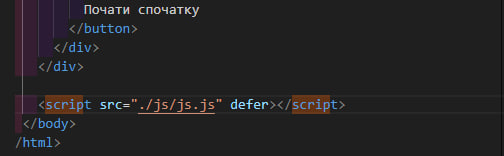

Тема 1. Динамічна, об'єктно-орієнтована мова програмування JavaScript
У цій темі ми будемо розглядати:
-
Поняття про JavaScript
-
Технологія створення вебсторінок за допомогою HTML та CSS
-
Методика використання JavaScript при створенні вебсторінок
-
Технологія застосування Java-скриптів на вебсторінках
-
Створення контенту сторінок з використанням Java-скриптів
Поняття про JavaScript
JavaScript (або скорочено JS) — це повноцінна динамічна мова програмування, яка застосовується до HTML документу та може забезпечити динамічну взаємодію на вебсайтах. Її розробив Брендан Айк, співзасновник проекту Mozilla, Mozilla Foundation та Mozilla Corporation.

JavaScript неймовірно універсальний і дружелюбний до новачків. З великим досвідом ви зможете створювати ігри, анімовану 2D і 3D графіку, повномасштабні додатки з базами даних та багато іншого!
Ця мова програмування широко використовується у веброзробці як на стороні клієнта, так і на стороні сервера. JavaScript може бути використаний для створення повноцінних вебдодатків, включаючи інтерактивні вебсайти, односторінкові додатки (SPA), вебігри та мобільні додатки.
JavaScript сам по собі досить компактний, і при цьому дуже гнучкий. Розробниками написано велику кількість інструментів поверх основної мови JavaScript, які розблоковують велику кількість додаткових функцій з дуже невеликими зусиллями.
Перевірка знань
Технологія створення вебсторінок за допомогою HTML та CSS
Технологія створення вебсторінок за допомогою HTML та CSS полягає в поєднанні двох основних мов - HTML (HyperText Markup Language) і CSS (Cascading Style Sheets), які спільно визначають вигляд і структуру вебсторінок. Взаємодія HTML і CSS полягає в тому, що HTML визначає структуру та логіку сторінки, в той час як CSS відповідає за її вигляд та оформлення. Це дозволяє розробникам створювати вебсторінки з чіткою структурою, а також з атрактивним та привабливим дизайном.
Для кращого розуміння можна навести анологію в якій HTML буде
"скелет", а CSS "шкіра". HTML можна розглядати як "скелет"
вебсторінки - він визначає структуру та елементи сторінки, такі як
заголовки, параграфи, списки, таблиці тощо. Ці елементи утворюють
основу сторінки і визначають її основну структуру.
CSS, з іншого боку, можна розглядати як "шкіра" - він визначає
зовнішній вигляд і стиль сторінки. За допомогою CSS можна
змінювати кольори тексту, фону, встановлювати розміри та форму
елементів, задавати відстані між елементами, розташування тощо.
Отже, HTML надає структуру і контент сторінки, тоді як CSS надає стиль та оформлення. Підключаючи CSS до HTML, ви можите створити привабливий та естетичний дизайн для вашого контенту.
Розглянемо детальніше, де і як HTML та CSS використовуються у веброзробці:
HTML (HyperText Markup Language) використовується для створення структури вебсторінок. Основні використовуються випадки:
-
Відображення тексту та зображень:
Елементи HTML, такі як <p> для параграфів тексту та <img> для зображень, дозволяють розміщувати контент на веб сторінці. Приклад:<p>Це параграф з текстом.</p>
<img src="image.jpg" alt="Зображення"> -
Створення заголовків і підзаголовків:
Елементи <h1>, <h2>, <h3> і т. д. використовуються для визначення рівнів заголовків на сторінці.Приклад:
<h1>Головний Заголовок</h1>
<h2>Підзаголовок</h2> -
Створення списків:
Елементи <ul> (невпорядкований список) та <ol> (впорядкований список) використовуються для створення списків елементів.Приклад:
<ul>
<li>
Елемент списку 1
</li>
<li>
Елемент списку 2
</li>
</ul> -
Створення посилань:
Елемент <a> використовується для створення посилань на інші вебсторінки або ресурси.Приклад:
<a href="https://www.example.com">Посилання на іншу сторінку</a>

CSS (Cascading Style Sheets) використовується для оформлення стилів вебсторінок. Основні використовуються випадки:
-
Зміна кольорів та фонів:
CSS дозволяє визначати кольори тексту, фону елементів і фонові зображення.Приклад:
body {
color: #333; /* Колір тексту */
background-color: #f0f0f0; /* Колір фону */
} -
Форматування шрифтів:
CSS дозволяє вибирати різні шрифти, розміри шрифтів та стилізувати текст.Приклад:
p {
font-family: Arial, sans-serif; /* Вибір шрифта */
font-size: 16px; /* Розмір шрифта */
font-weight: bold; /* Товщина шрифта */
} -
Розміщення та розташування елементів:
CSS дозволяє керувати розташуванням елементів на сторінці, встановлюючи відступи, позиціонування та розміри.Приклад:
header {
text-align: center; /* Вирівнювання тексту по центру */
padding: 20px; /* Відступи від країв */
}
Класи в CSS - це іменовані набори стилів, які можуть бути застосовані до одного або декількох елементів HTML. Використовуючи класи, ви можете створити специфічні стилі, які можна легко застосувати до будь-якої кількості елементів на сторінці.
Класи визначаються у CSS за допомогою селектора класу, який починається з крапки (.), за якою слідує ім'я класу. Наприклад, якщо ви хочете визначити стилі для класу з ім'ям "button", то ви можете зробити це так:
.button { background-color: #007bff;}
Це визначає стилі для елементів, які мають клас "button". Потім ви можете застосувати цей клас до будь-якого елемента HTML, вказавши його атрибут класу. Наприклад:
<button class="button">Натисніть на мене</button>
Перевірка знань
JavaScript при створенні вебсторінок
Методика використання JavaScript при створенні вебсторінок

Використання JavaScript при створенні вебсторінок - це невід'ємна складова сучасної веброзробки, яка дозволяє зробити сторінки більш динамічними, інтерактивними та функціональними. Ось методика використання JavaScript при створенні вебсторінок:
-
Доступ до DOM (Document Object Model):
JavaScript дозволяє отримати доступ до елементів та структури вебсторінки через DOM. Ви можете звертатися до елементів, змінювати їх властивості, додавати або видаляти елементи, реагувати на події та багато іншого. -
Взаємодія з користувачем:
JavaScript дозволяє створювати інтерактивні елементи та функціонал на сторінці. Наприклад, ви можете додавати обробники подій, такі як клік чи наведення миші, для взаємодії з користувачем. -
Асинхронні запити на сервер:
JavaScript може використовуватися для виконання асинхронних запитів на сервер за допомогою технологій, таких як AJAX (Asynchronous JavaScript and XML) або Fetch API. Це дозволяє оновлювати вміст сторінки без перезавантаження, взаємодіючи з сервером у фоновому режимі. -
Анімація та ефекти:
JavaScript може використовуватися для створення анімацій, переходів та інших візуальних ефектів на сторінці. Ви можете керувати анімаціями за допомогою CSS або програмно змінювати стилі елементів для створення різних візуальних ефектів. -
Робота з формами:
JavaScript дозволяє виконувати перевірку даних, обробляти введення користувача та взаємодіяти з формами на сторінці. Ви можете валідувати введені дані, додавати автозаповнення, валідувати поля та відправляти дані на сервер. -
Використання сторонніх бібліотек і фреймворків:
JavaScript має широкий вибір сторонніх бібліотек і фреймворків, таких як React, Angular, Vue.js та інші. Вони надають додаткові функції та інструменти для швидкої і ефективної розробки вебдодатків.
Отже, JavaScript використовується для створення різноманітних функцій та ефектів, які додають інтерактивність і привабливість до вебсторінок, забезпечуючи кращий користувацький досвід.
Перевірка знань
Технологія застосування Java-скриптів на вебсторінках
Існують три основних методи підключення JavaScript до HTML:
-
Вбудований (Inline):
JavaScript-код вставляється безпосередньо в HTML-документ між тегами <script> та </script>. Наприклад:<script>
// JavaScript код тут
</script> -
Зовнішній файл (External):
JavaScript-код розміщується у окремому файлі з розширенням .js, а потім цей файл підключається до HTML-документа за допомогою атрибута src тега <script>. Наприклад:<script src="script.js"></script>
-
Атрибут onclick, onload тощо:
JavaScript-код може бути викликаний з атрибутів HTML-елементів, таких як onclick, onload, onmouseover, тощо. Наприклад:<button onclick="myFunction()">Натисни мене</button>
Зазвичай JavaScript підключається як окремий файл, або декілька окремиї файлів. Це зроблено для зручності та прийнято стандартами програмістів.
Крім зручності та відповідності стандартам програмістів, підключення JavaScript як окремих файлів дозволяє зберігати код у більш організованому та систематизованому вигляді. Це сприяє підтримці та розвитку проектів на протязі тривалого часу, спрощує роботу над ними для багатьох розробників та полегшує спільне використання коду між різними частинами проекту або навіть між різними проектами. Такий підхід також підвищує стійкість проекту до помилок та полегшує процес відлагодження та підтримки.
Створення контенту сторінок з використанням Java-скриптів
JavaScript надає багато можливостей для динамічного створення контенту на сторінці. Ось деякі способи, якими ви можете використовувати JavaScript для створення контенту:
-
DOM Маніпуляція: Ви можете створювати, змінювати або видаляти HTML-елементи за допомогою JavaScript. Це досягається шляхом отримання доступу до DOM (Document Object Model) елементів і використання методів, таких як createElement, appendChild, innerHTML тощо.
// Створення нового елементу
<div> let newDiv = document.createElement("div");
// Додавання текстового вмісту newDiv.innerHTML = "Новий контент";
// Додавання елементу до існуючого елементу з id="container"
document.getElementById("container").appendChild(newDiv); -
AJAX (Asynchronous JavaScript and XML): Ви можете використовувати AJAX для отримання даних з сервера без перезавантаження сторінки. Отримані дані можна використовувати для створення або оновлення контенту на сторінці.
// Використання AJAX для отримання даних з сервера
let xhr = new XMLHttpRequest();
xhr.open("GET", "data.json", true);
xhr.onload = function() {
if (xhr.status == 200) {
// Обробка отриманих даних
let data = JSON.parse(xhr.responseText);
// Вставка даних на сторінку
document.getElementById("dataContainer").innerHTML = data.content;
}
};
xhr.send(); -
Шаблонізація (Template Engines): Ви можете використовувати бібліотеки або фреймворки шаблонізації, такі як Handlebars, Mustache, або шаблонізатори в Angular або React, для створення шаблонів HTML, які можна заповнити динамічними даними.
Наприклад з використанням Handlebars:
// Компіляція шаблону
let template = Handlebars.compile("<p>{{name}} є {{role}}</p>");
// Дані для заповнення шаблону
let context = { name: "John", role: "розробник" };
// Вставка заповненого шаблону на сторінку
document.getElementById("templateContainer").innerHTML = template(context); -
Генерація HTML: Ви можете генерувати HTML-код за допомогою JavaScript, який потім можна вставити на сторінку.
// Генерація списку
let listHTML = "<ul>";
for (let i = 1; i <= 5; i++)
{
listHTML += "<li>Елемент " + i + "</li>";
}
listHTML += "</ul>";
// Вставка HTML на сторінку
document.getElementById("listContainer").insertAdjacentHTML('beforeend', listHTML);Функція insertAdjacentHTML має чотири режими вставки, кожен з яких визначає місце вставки відносно обраного елемента. Значення "beforebegin" вставляє HTML перед обраним елементом, "afterbegin" вставляє HTML всередину обраного елемента перед всіма його дочірніми елементами, "beforeend" вставляє HTML в кінець обраного елемента, після всіх його дочірніх елементів, а "afterend" вставляє HTML після обраного елемента.
Перевірка знань
Перевірка навичок
Виконайте наступні вказівки в полі нижче:
- Створіть контейнер: Додайте в поле контейнер, який буде вміщувати всі інші елементи. Додайте йому клас "container".
- Додайте заголовок:Напишіть "Ласкаво просимо на мою вебсторінку" всередині цих тегів, та додайте клас "title"
- Додайте параграф: Створіть параграф та додайте власний текст в нього, наприклад ваше ім'я.
- Додайте список: Додайте невпорядкований список та впишіть три елементи списку між відповідними тегами, додайте в кожен елемент власний текст.
- Додайте кнопку: Додайте кнопку з класом "button". Напишіть "Наведіть на мене" всередині відповідних тегів.
Якщо виконали завдання правильно то отримаєте сторінку схожу на цю:
До наступної теми